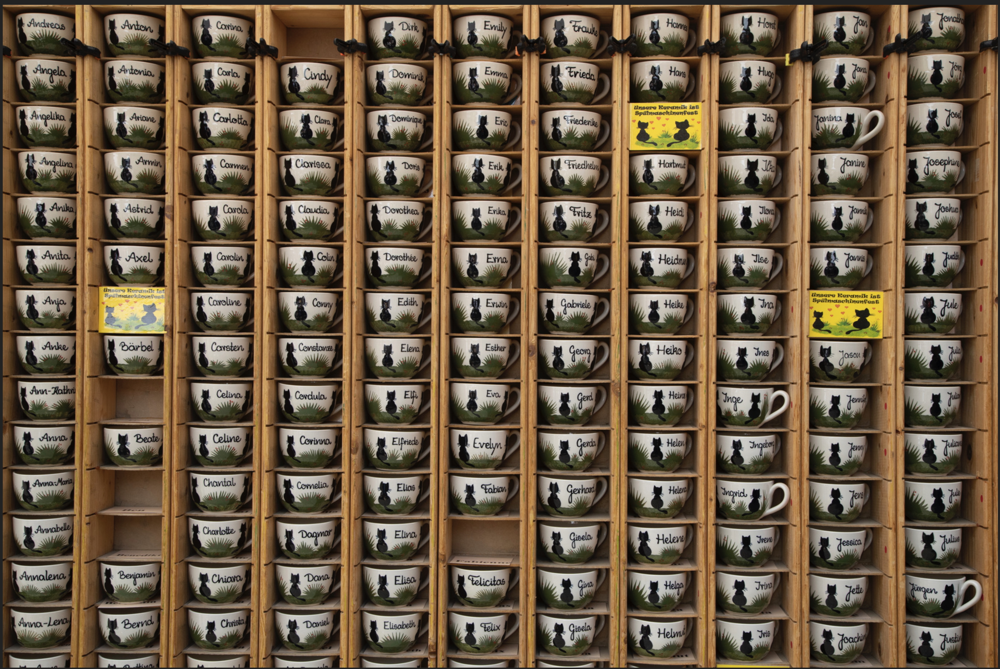
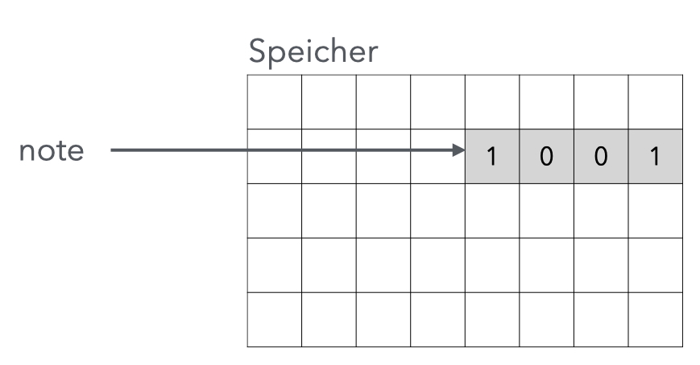

note = 123
print(note)123Variablen sind ein fundamentales Konzept in Programmiersprachen, da sie es ermöglichen, Daten temporär im Speicher zu speichern und später wieder abzurufen. Ohne Variablen könnten Programme keine Eingaben verarbeiten, Zwischenergebnisse speichern oder auf veränderte Daten reagieren. Sie fungieren als Container für Werte, die sich während der Programmausführung ändern können, was die Grundlage für dynamische und interaktive Programme bildet. Variablen machen Programme flexibel und wiederverwendbar, da derselbe Code mit unterschiedlichen Daten arbeiten kann. Darüber hinaus verbessern sie die Lesbarkeit und Wartbarkeit von Code, indem sie aussagekräftige Namen für Daten bereitstellen.
In Python sind folgende Datentypen für Variablen möglich:
int für Ganzzahlenfloat für Fließkommazahlenstring für Zeichenkettenboolean für Wahrheitswertelist für Listentuple für Tupelnote = 123
print(note)123Bezeichner = Ausdruck
Das Gleichheitszeichen ist der Zuweisungsoperator und nicht das mathematische Gleichheitszeichen (Vergleichsoperator).
Ausdrücke können sein: - Operatoren - Literalen - Variablen
Die Auswertung eines Ausdrucks liefert einen Wert oder bricht mit Fehlermeldung ab. Die Auswertung bei arithmetischen Ausdrücken läuft nach folgenden Regeln ab:
Zuweisung von Werten an Variablen
note = 4Ausgabe der Variablen
print(note)4Mit Variablen rechnen
print(2*4**note)512Dynamische Typisierung
durchschnitt = 12.3
print(durchschnitt)12.3Rechnen mit unterschiedkichen Zahldatentypen
print(durchschnitt * note)49.2Fehler bei nicht definierten Variablen
print(goody)--------------------------------------------------------------------------- NameError Traceback (most recent call last) Cell In[44], line 1 ----> 1 print(goody) NameError: name 'goody' is not defined
Strings sind Zeichenketten, die in Anführungszeichen stehen. Sie können mit Variablen verknüpft werden.
print("ham")hamanalog geht das auch mit einfachen Anführungszeichen
print('egg')Der PEP 8 (Python Style Guide) empfiehlt, Strings in einfachen Anführungszeichen zu schreiben.
Der +-Operator wird bei Strings für die Verkettung von Strings (Konkatenation)verwendet.
print('ham'+'egg')hameggStings lassen sich in Python auch mit ganzen Zahlen über den *-Operator verknüpfen, was zu einer Wiederholung des Strings führt.
::: {#2515fbea .cell}
``` {.python .cell-code}
print('ham'*3)hamhamham:::
print('ham'*1.5)--------------------------------------------------------------------------- TypeError Traceback (most recent call last) Cell In[21], line 1 ----> 1 print('ham'*1.5) TypeError: can't multiply sequence by non-int of type 'float'
Mit asserts wird überprüft, ob der Wert eines Strings einem vorgegebenen Wert entspricht und wird für Tests verwendet. Stimmmt der Wert überein, passiert nichts, ansonsten wird eine Fehlermeldung ausgegeben.
assert 0* 'egg' == ""assert 0* 'egg' == 'egg'--------------------------------------------------------------------------- AssertionError Traceback (most recent call last) Cell In[24], line 1 ----> 1 assert 0* 'egg' == 'egg' AssertionError:
Python ist Case-Sensitive.
Number = 10
print(Number) 10print(number)--------------------------------------------------------------------------- NameError Traceback (most recent call last) Cell In[26], line 1 ----> 1 print(number) NameError: name 'number' is not defined
Der Speicher des Computers lässt sich mit einem Tassenschrank vergleichen, in dem jede Tasse für eine Variable steht. In jede Tasse kann ein Wert gelegt werden und der Name der Tasse ist der Bezeichner der Variablen.

Konkret wird bei der Zuweisung von Variablen im Speicher ein Bereich reserviert, der den Wert der Variablen speichert. Der Variablenname (Bezeichner) ist ein daher der Zeiger auf diesen Bereich.

Die Speicheradresse lässt sich mit der id-Funktion ermitteln.
id(note)4379198056Wird ein weiterer Bezeichner auf die gleiche Variable eingeführt, so referenziert dieser bei den einfachen Datentypen (int float) nicht den gleichen Speicherbereich, sondern erhält eine Wertkopie. Damit ändert sich der Wert der ersten Variablen nicht, wenn man den Wert der zweiten Variablen ändert.
test1 = 10
print(test1)10test2=test1
print(test2)10id(test1)4379194440id(test2)4379194440test2=9
print(test2)9id(test2)4379194408print(test1)10Python verwendet Integer Caching (Small Integer Optimization) für kleine Ganzzahlen (typischerweise -5 bis 256). Python speichert die kleinen Ganzzahlen weil sie häufig verwendet werden, nur einmal im Speicher und lässt alle Variablen mit demselben Wert auf dasselbe Objekt zeigen. Sobald Sie test2 einen neuen Wert zuweisen, zeigt es auf ein anderes gecachtes Objekt und erhält eine neue ID, während test1 weiterhin auf das ursprüngliche Objekt für den Wert 10 zeigt.
Om Detail bedeudet dies:
test1 = 10 wird das gecachte Objekt für 10 verwendettest2 = test1 zeigt test2 auf dasselbe gecachte Objekt → gleiche IDtest2 = 9 wird test2 auf das gecachte Objekt für 9 umgeleitet → neue IDWichtig: Obwohl beide Variablen zunächst die gleiche ID haben, sind sie konzeptionell unabhängig. Eine Änderung von test2 beeinflusst test1 nicht, da bei der Neuzuweisung ein anderes Objekt referenziert wird.
Dies ist anders als bei komplexeren Datentypen wie Listen, wo echte Referenzen verwendet werden.
Und wie sieht das bei Fließkommazahlen aus?
test3 = 1334.2
id(test3)4420604848test4=test3
id(test4)4420604848Bei float-Werten gibt es natürlich kein Integer Caching wie bei kleinen Ganzzahlen. Trotzdem haben test3 und test4 die gleiche ID, weil es sich um ein immutable Objekt handelt. Dieses Verhalten ist bei allen unveränderlichen (immutable) Datentypen in Python gleich.
Immutable (unveränderlich) bedeutet, dass der Wert eines Objekts nach seiner Erstellung nicht mehr verändert werden kann.
Immutable Datentypen in Python: - int (Ganzzahlen) - float (Fließkommazahlen) - str (Strings/Zeichenketten) - tuple (Tupel) - bool (Wahrheitswerte) - frozenset (unveränderliche Mengen)
Mutable Datentypen in Python: - list (Listen) - dict (Dictionaries/Wörterbücher) - set (Mengen)
Bei immutable Datentypen wird bei jeder “Änderung” ein neues Objekt erstellt!
Zustand eines Programms nach Ausführung wird vollständig beschrieben durch die Belegung aller Variablen mit Werten.